Mutfak dolabı · Ankara
Pencere Önü L Mutfak
Pencere önünden dönen, kulpsuz çekmeceli L mutfak.
Projeyi inceleyinGerçek projeler
Her işin fotoğrafını, ne gördüğünüzü yazarak paylaşıyoruz. Sıfat değil, detay.
Google Haritalar: 4,9 · 26 yorum · 20 Ekim 2026 itibarıyla
Mutfak dolabı · Ankara
Pencere önünden dönen, kulpsuz çekmeceli L mutfak.
Projeyi inceleyin
Vestiyer & antre · Ankara
Tavana kadar üst dolap, boy ayna ve çıtalı askı paneli.
Projeyi inceleyinKaravan · Instagram ve müşteri yorumu
"Ben karavan yaptırdım. Hiç bir tane demirden karkas olmamasına rağmen iki yıldır kullanıyorum, inanılmaz sağlamlıkta.…" — Kamil C.
Karavan sayfasıInstagram'dan
Firmamızın Instagram hesabındaki paylaşımlardan. Kategoriye göre süzebilirsiniz.
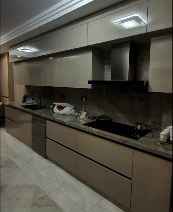
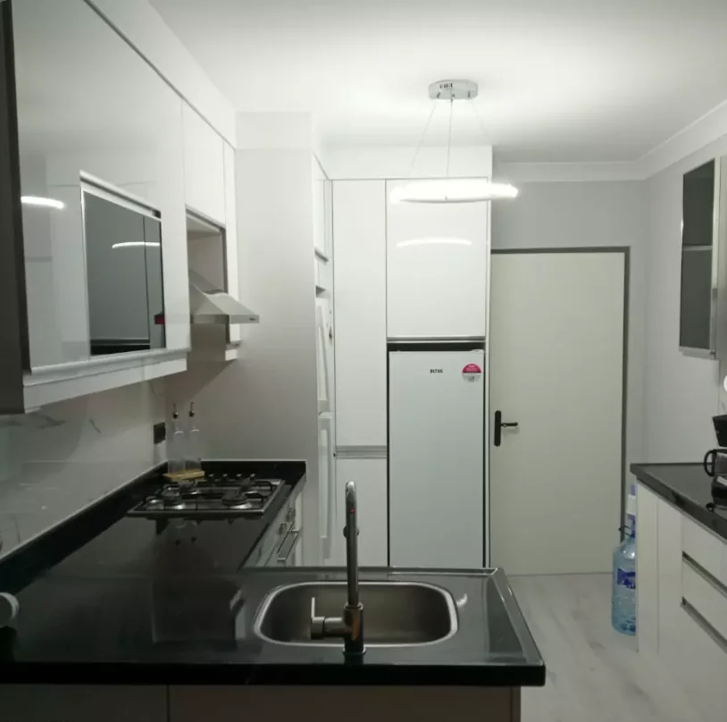
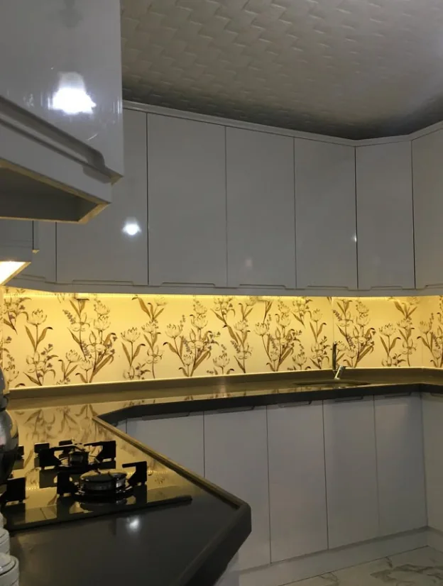
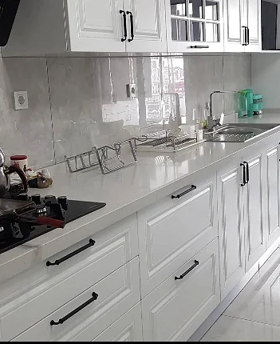
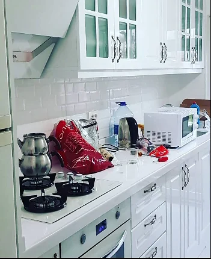
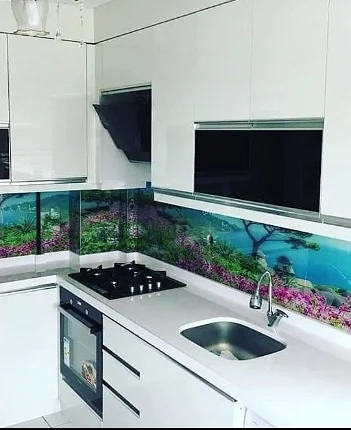
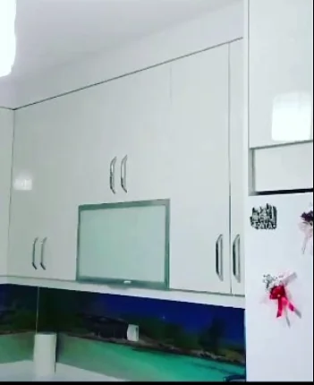
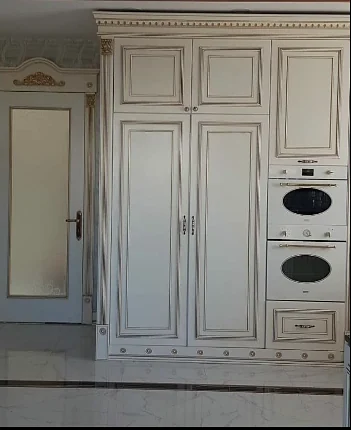
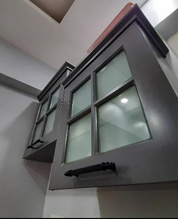


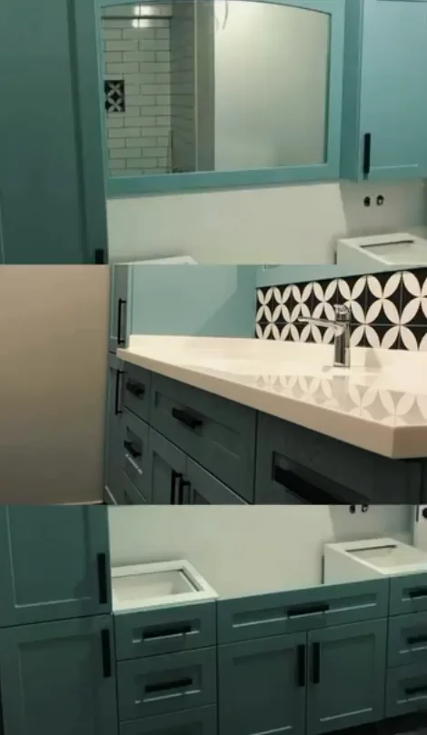
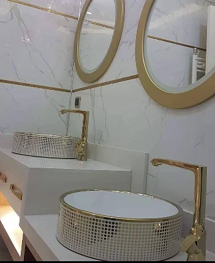
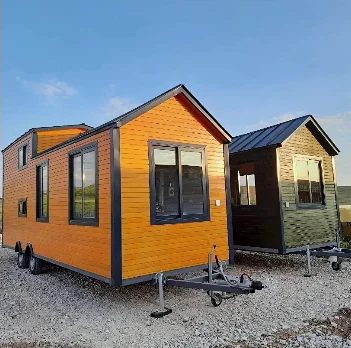
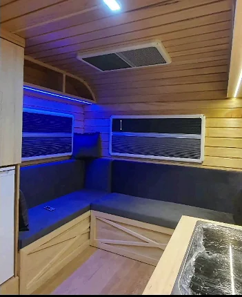
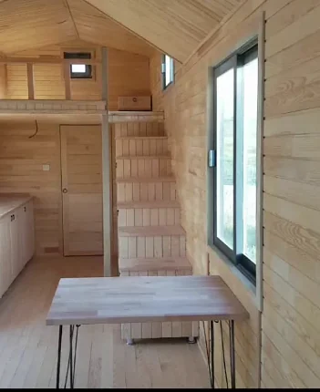
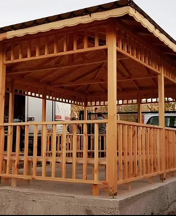
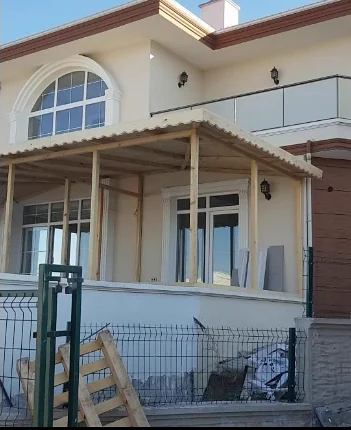
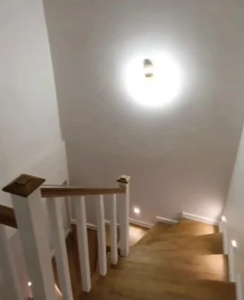
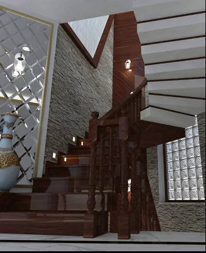
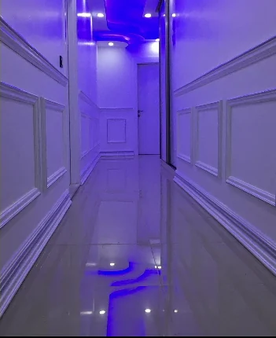
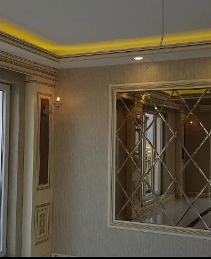
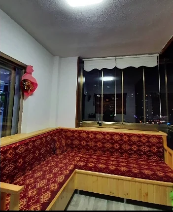
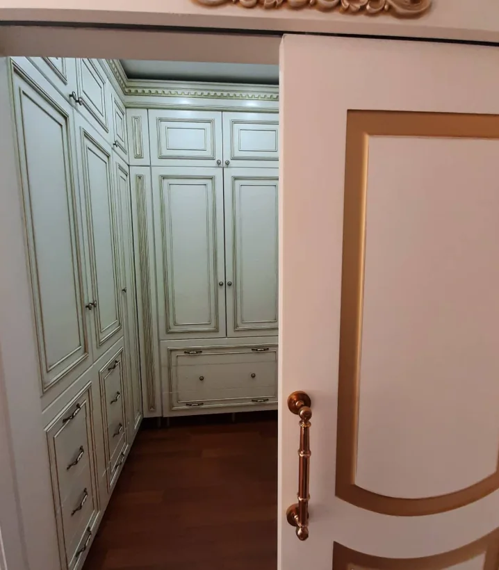
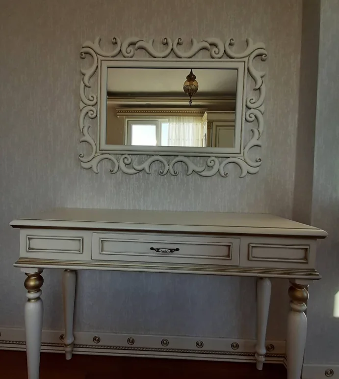
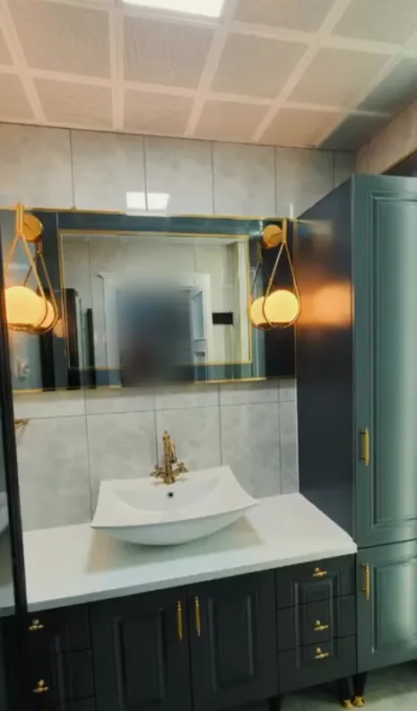
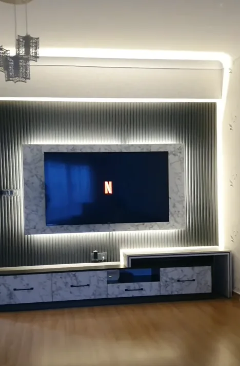
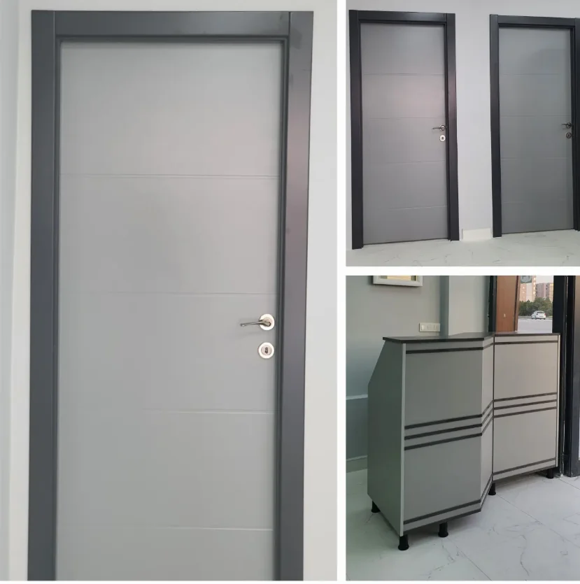
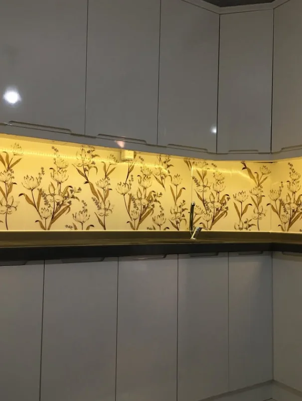
Google Haritalar · 4,9 · 26 yorum
Yorumlardan, 20 Ekim 2026 tarihinde okunduğu gibi. Tamamı ve müşterilerin paylaştığı fotoğraflar Haritalar'da.
Mobilya konusunda gideceğiniz tek adres. Murat ustanın ustalığı 10 numara. Kullandığı malzeme kalitesi 10 numara, rahatlıkla bütün mobilya işlerinizi yaptırabilirsiniz. Ustam ellerine sağlık.
Sanat ve tecrübede çıtanın üstünde bir işletme, kaliteden ve müşteri memnuniyetinden ödün vermeyip geniş çaplı üretim kapasitesi ile mobilya ve aksesuara dair her işi itinalı temizlikte zamanında teslim etmesi en iyi yanı. Ayrıca güler yüzlülüğü için özellikle Murat ustaya çok teşekkür ederim…
Ben karavan yaptırdım. Hiç bir tane demirden karkas olmamasına rağmen iki yıldır kullanıyorum, inanılmaz sağlamlıkta. Çok özel bir ağaçtan yaptı; dünyanın en hafif ağacı olan ayous ağacı kullandı. Emeğine sağlık, süper bir ustalık ve kişilik sahibi bir abimdir. Çok ama çok teşekkür ederim…
Başlangıç noktası
Mobilya ihtiyacınızı anlatın, alanınızın fotoğraflarını WhatsApp'tan gönderin; birlikte değerlendirelim.
Siz hayal edin, biz yapalım.
Aklınızdaki mobilyayı, alanınızı ve ihtiyacınızı konuşalım. Fotoğraflarınızı WhatsApp'tan gönderin.
ya da konumu görün: Google Haritalar